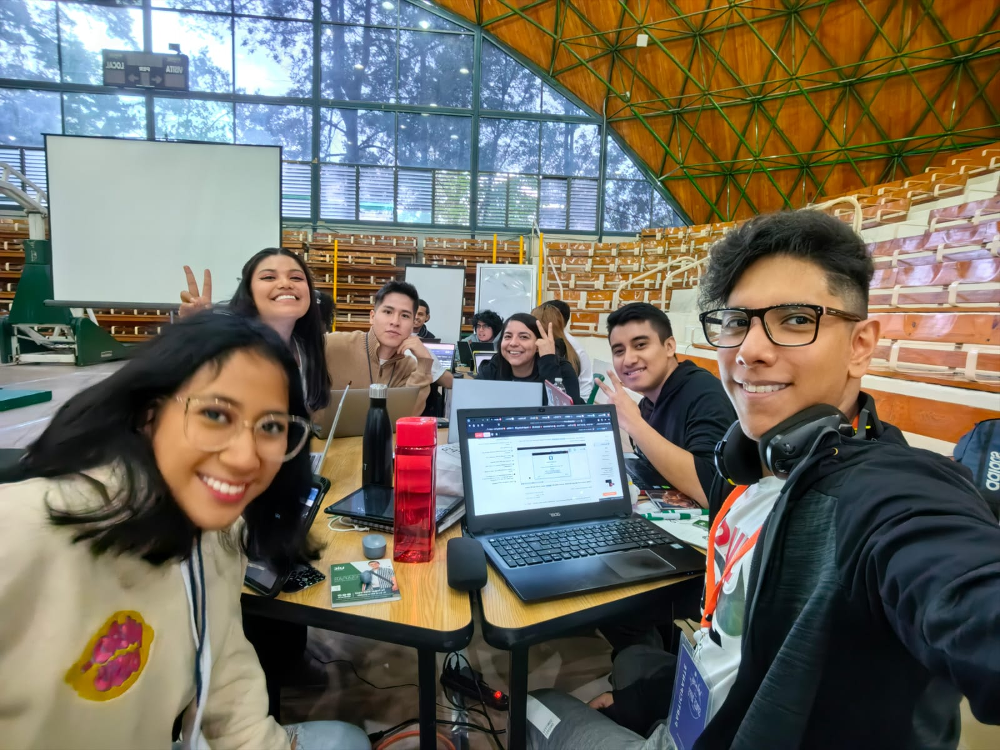

Vision
"Be leaders in space travel industry, inspiring people worldwide to gaze at the stars and venture beyond Earth's boundaries. We aim to be recognized for be the first option of providing safe, exciting, and educational space travel experiences.
"
Our Team

Our Team At SkyRiders, we have a team of highly skilled professionals who are passionate about space exploration:
- Diego Nuñez: Astronautics expert and leader of our space operations team.
- Vanessa Rodriguez: Space tourism specialist and customer experience lead.
- Rubi Frias: Aerospace engineer and safety officer for our journeys.
- Marco Flores: Innovation expert and space technology development.
- Sergio Zepeda: Astronomer and space education advocate.
- Victoria Pedroza: Space biologist and environmental sustainability specialist.
Together, we work tirelessly to offer unforgettable experiences to our customers. Over the years, we have built strong relationships with partners in the space industry, and we are committed to safety, innovation, and excellence in each of our journeys.